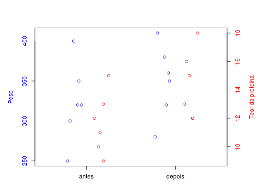

Dados referentes a um estudo com animais avaliados antes e depois de terem sido submetidos a uma dieta balanceada. O interesse do estudo é avaliar se houve efeito significativo da dieta nas variáveis peso e teor de proteína.
Um data.frame com 12 observações e 3 variáveis.
fasepesoteorFERREIRA (2011), Exercício 7.4.1 pág. 328.
data(FerreiraEx7.4.1)#> Warning: data set ‘FerreiraEx7.4.1’ not foundstr(FerreiraEx7.4.1)#> 'data.frame': 12 obs. of 3 variables: #> $ fase: Factor w/ 2 levels "antes","depois": 1 1 1 1 1 1 2 2 2 2 ... #> $ peso: int 250 300 350 320 400 320 280 320 360 380 ... #> $ teor: int 10 12 13 15 9 11 12 16 13 18 ...aggregate(peso ~ fase, data = FerreiraEx7.4.1, summary)#> fase peso.Min. peso.1st Qu. peso.Median peso.Mean peso.3rd Qu. peso.Max. #> 1 antes 250.0 305.0 320.0 323.3 342.5 400.0 #> 2 depois 280.0 327.5 355.0 350.0 375.0 410.0aggregate(teor ~ fase, data = FerreiraEx7.4.1, summary)#> fase teor.Min. teor.1st Qu. teor.Median teor.Mean teor.3rd Qu. teor.Max. #> 1 antes 9.00 10.25 11.50 11.67 12.75 15.00 #> 2 depois 12.00 12.25 14.00 14.33 15.75 18.00by(FerreiraEx7.4.1[2:3], FerreiraEx7.4.1[1], cov)#> fase: antes #> peso teor #> peso 2506.66667 -12.666667 #> teor -12.66667 4.666667 #> ------------------------------------------------------------ #> fase: depois #> peso teor #> peso 2080 50.000000 #> teor 50 5.866667with(FerreiraEx7.4.1, { par(mar = c(4, 5, 4, 5)) plot.default(y = peso, xlab = "", ylab = "", x = jitter(as.numeric(fase), factor = 0.5) - 0.15, xlim = c(0.5, 2.5), col = 4, axes = FALSE) box() axis(side = 2, col.axis = 4) mtext(side = 2, text = "Peso", line = 3, col = 4) par(new = TRUE, mar = c(4, 5, 4, 5)) plot.default(y = teor, xlab = "", ylab = "", x = jitter(as.numeric(fase), factor = 0.5) + 0.15, xlim = c(0.5, 2.5), col = 2, axes = FALSE) axis(side = 4, col.axis = 2) axis(side = 1, at = 1:2, labels = c("antes", "depois")) mtext(side = 4, text = "Teor da proteína", line = 3, col = 2) })